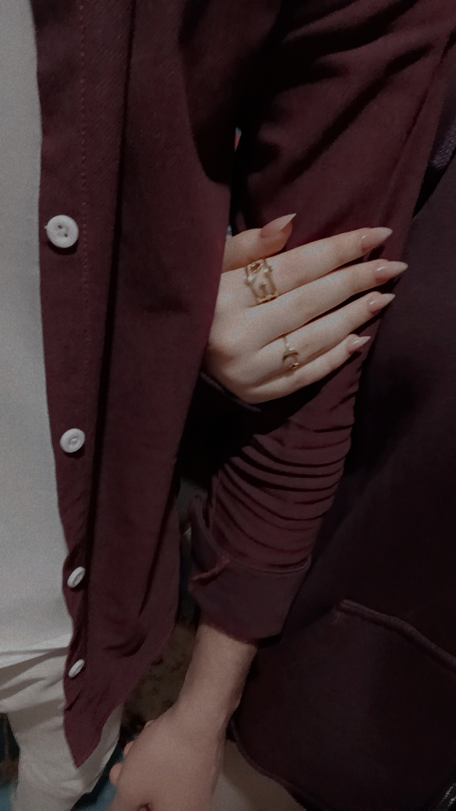
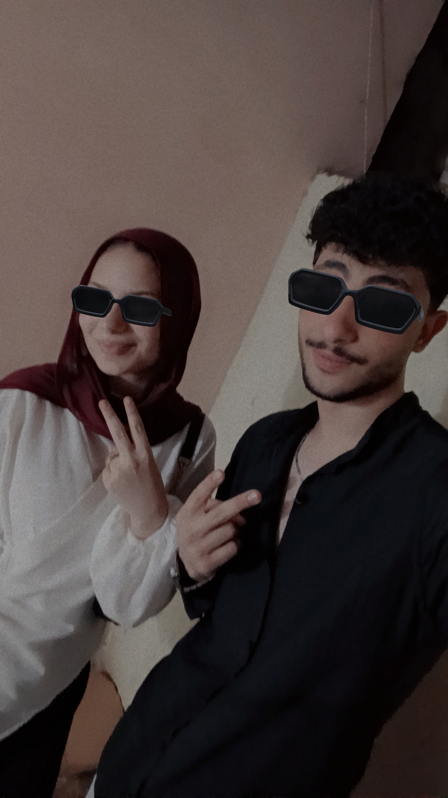
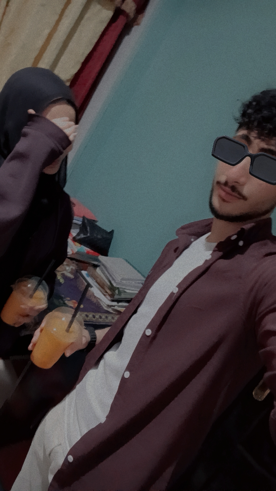
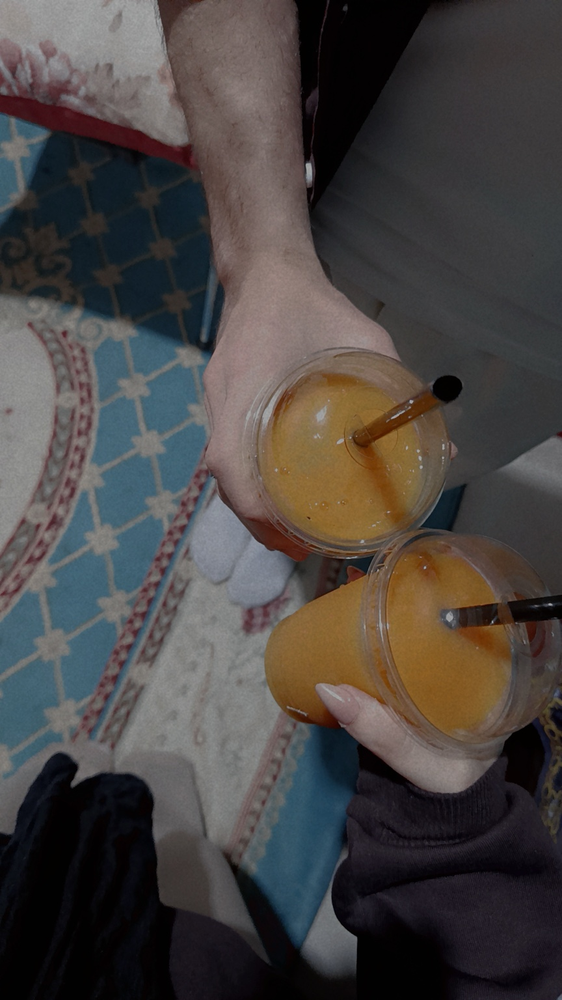
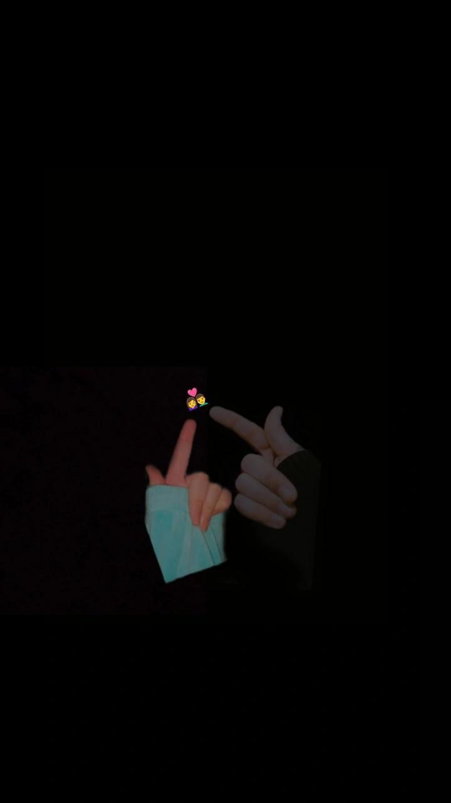
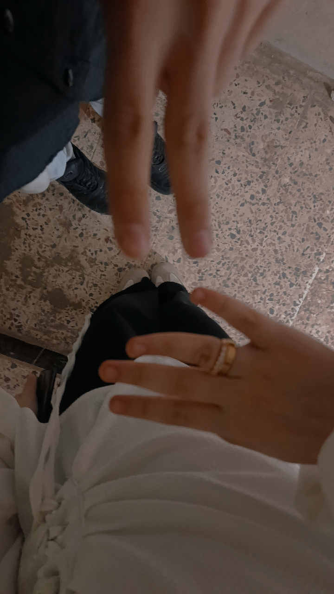
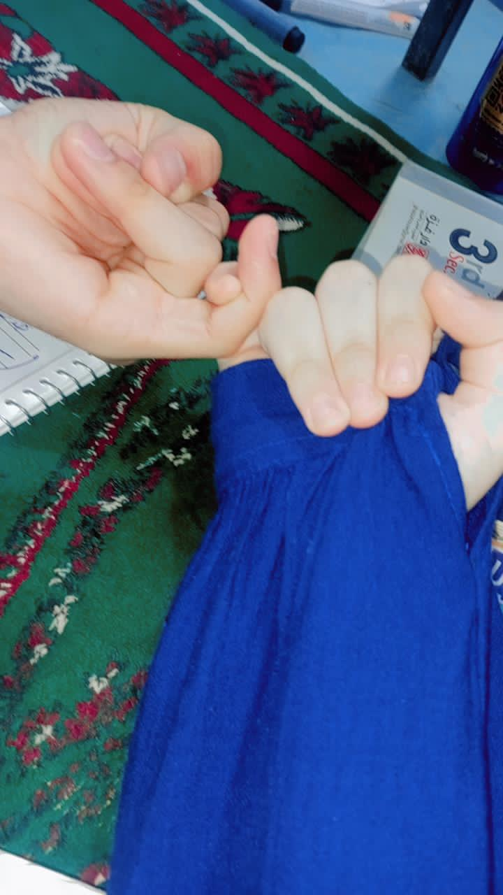
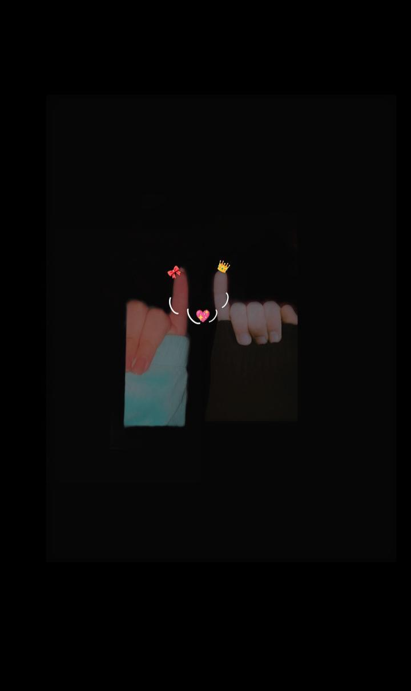
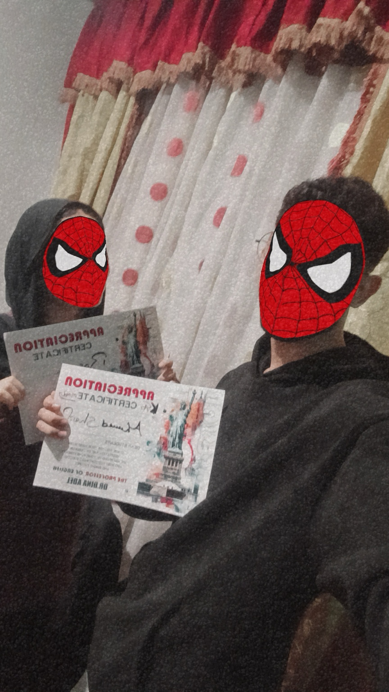
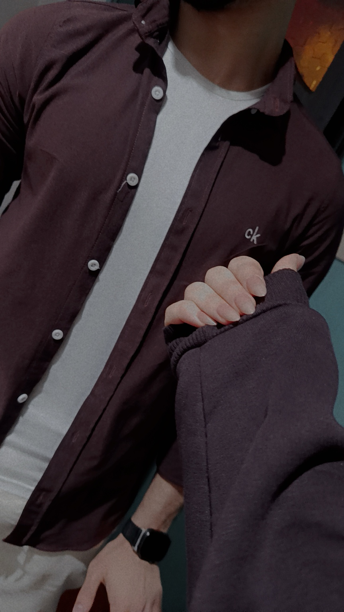

في صور كتير ممكن تبقى حلوة، بس الصورة دي ليها إحساس مختلف… يمكن عشان فيها جزء مننا مش هيتكرر. وأنا كل ما أشوفها أفتكر قد إيه وجودك في حياتي خلّى لحظات عادية تبقى غالية.
A little place for the moments that mean everything.
اضغطي على القلب
الخزنة دي ليها رقم خاص بيها ❤️
أحلى ذكريات عمرنا قضيناها سوا ❤️

في صور كتير ممكن تبقى حلوة، بس الصورة دي ليها إحساس مختلف… يمكن عشان فيها جزء مننا مش هيتكرر. وأنا كل ما أشوفها أفتكر قد إيه وجودك في حياتي خلّى لحظات عادية تبقى غالية.

أجمل حاجة فينا إننا بنعرف نضحك ونبقى على طبيعتنا مع بعض. الضحكة اللي بينا، والهزار، والنظرات الصغيرة… حاجات بسيطة بس عندي أغلى من حاجات كتير في الدنيا.

يمكن المكان والوقت يتغيروا، لكن إحساسي وإنتِ جنبي بيفضل هو هو. كنتِ دايمًا الشخص اللي بيخلّي اللحظة أهدى وأحلى، وده شيء عمري ما هعتبره عادي.

حتى التفاصيل الصغيرة اللي محدش ياخد باله منها، أنا بحبها لأنها تخصنا إحنا. إيد في إيد، مشروب بنشربه سوا، أو لحظة ساكتين فيها… كل ده بالنسبالي ذكرى تستاهل تتحفظ.

بحب الذكريات اللي مفيهاش تكلف، اللي كنا فيها إحنا وبس. يمكن الصورة بسيطة، لكن وراها إحساس كبير، وإحساس إن كان عندي وقتها شخص بحبه وكنت مبسوط إنه موجود جنبي.

في لحظات بتعدي بسرعة، وبعدها نكتشف إنها كانت من أجمل لحظات عمرنا. وأنا نفسي كل لحظة حلوة عشناها تفضل جواكي زي ما هي جوايا، مهما حصل ومهما اتغيرت الأيام.

أكتر حاجة بحبها في صورنا إنها بتفكرني إن الحب مش كلام وبس. الحب هو إن وجود شخص واحد يخلي اليوم أخف، والقعدة أحن، والضحكة من القلب… وإنتِ الشخص ده بالنسبة لي.

الصورة دي بتفكرني بقد إيه إحنا عندنا حاجات تخصنا إحنا، حاجات محدش يقدر يفهم معناها غيرنا. ودي أكتر حاجة مخلياني متمسك بكل ذكرى بينا.

أنا مش محتاج ذكرى مثالية عشان أحبها… كفاية إنها كانت وإنتِ فيها. عشان كده حتى أبسط صورنا عندي ليها مكان كبير، لأنها شايلة إحساس عمره ما كان بسيط.

ولو الدنيا خدتنا في ألف اتجاه، نفسي دايمًا نفتكر إن كان في وقت ضحكنا فيه من قلبنا، وقربنا من بعض، وعملنا ذكريات تستاهل نرجعلها كل ما نزعل.
أنا عارف إن بينا زعل، وعارف إن ممكن أكون ضايقتك أو قصّرت في حقك، وعشان كده أنا مش داخل أبرر ولا أقول إن الغلط مش مني. أنا داخل أقولك ببساطة: أنا آسف.
آسف على أي كلمة وجعتك، وعلى أي موقف خلاكي تحسي إني مش مقدّر وجودك بالشكل اللي تستاهليه. يمكن ساعات معرفش أعبّر صح، ويمكن أغلط وأنا فاكر إني بعمل الصح، لكن ده عمره ما كان معناه إنك مش مهمة عندي.
الحقيقة إنك من أكتر الناس اللي ليهم مكان حقيقي في قلبي، وكل الذكريات اللي فوق دي بالنسبة لي مش مجرد صور… دي لحظات أنا بفتكرها وببتسم، وبتفكرني قد إيه وجودك فرق معايا.
أنا مش طالب منك تنسي الزعل في لحظة، ولا عايز أضغط عليكي. كل اللي نفسي فيه إنك تسمحيلي أصلّح اللي بوّظته، وأثبتلك بالأفعال إنك غالية عندي وإن علاقتنا تستاهل نحافظ عليها.
بحبك، ومش عايز الخلاف ده يكون أقوى
من كل الحلو اللي بينا.
حقك عليا… ونفسي نرجع نضحك سوا تاني. ❤️